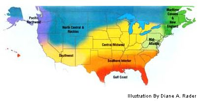

New England/Canada Maritimes
All is quiet in the garden. The garlic sleeps under its thick blanket of mulch and the compost pile has cooled. Unless you have a cold frame within a greenhouse where greens still can be picked, not much is happening in the garden. My New Year's resolution is to remember just how busy it gets in May and June. One or two new-projects are OK, but 20 are a lot of work. For holiday gifts, I am putting dried herbs in bottles with homemade labels: tarragon, Thai basil, sweet basil, oregano, garlic powder, summer savory and my own salad herb blend. The fresh flavors are a hit. Make garlic powder by peeling and halving the cloves. Dry them in the oven on very low heat or use a dehydrator. Grind in a food processor, with the finest setting of a meat grinder or with an electric coffee grinder. Homemade garlic powder is very pungent and makes a great tasting substitute for fresh garlic.
Mid-Atlantic
For now, spring gardening is a dream - the only sign of spring is the garden seed catalogs in your mailboxes. Snowy days are perfect for garden planning, or oiling and sharpening garden tools. Make sure the greenhouse is in good repair and you have lots of available cold-frame space to harden off plants when the time comes. When the temperature is above 40 degrees, you can open cold frames to harvest some greens. Be sure to order seed for bulb onions, early lettuce and early peppers right away so you can get them started in mid January. `Thai 88 Oakleaf lettuce and `Early Yellow Globe' onion grow well for us. Make a New Year's resolution to start your transplants from seed this year (if you don't already). It will open up a whole new world of wonderful varieties not otherwise available.
Southern Interior
The last leaves seem to hang on until after Thanksgiving - you can get them all in one raking if you wait. If you are really energetic, shred or mow them with your lawn mower. If you're feeling less than frisky, pile the leaves in a gully or hidden corner of the garden to rot, and come back in a year or so to harvest some rich compost! Here in the South, early December is the perfect time for planting garlic. Sow lettuce and cool-weather greens now for winter salads. Make this the year to try succession planting. For quick reference, write what to plant and when to plant it on the kitchen calendar. If you like mild, only slightly acidic tomatoes, try growing `Razzleberry' next season; its sturdy stems will be loaded with tasty, pink fruit.
Gulf Coast
Don't let the occasional cold night slow you down - this is a busy time in the garden and orchard. Just keep the frost blankets handy and the greenhouse or cold frame in good working order. Continue to plant cool-season vegetables like lettuce, radishes and greens. Also, don't neglect the orchard - planting and pruning are major chores this time of year. Blustery, cold days make it hard to contemplate that it will soon be time to start transplants for the spring garden. Early-bird gardeners often set out the first tomatoes in mid-February, so you'll need to start seed in early to mid January. Varieties 'Dona,' 'Carmello' and `Champion' are excellent for this region. However, they're not readily available as transplants so you'll have to start your own from seed. Resolve to grow at least one heirloom tomato variety this year`Purple Calabash' and `Georgia Streak' are worth trying in Gulf Coast gardens.
Central/Midwest
Much of your winter gardening will be spent looking through windows at the sleeping garden - redesign it now with this in mind. Vertical elements in the garden - whether built or grown - can create visual interest throughout the season, but take on an extra sculptural dimension when they're covered by a blanket of snow. Although you may be relaxing and enjoying the fruits of your last harvest, seed companies already are hard at work. Now is the time to request seed catalogs, and prepare a list of what you will need so you are organized when the garden springs to life. Watch for new items for the upcoming season: All America Selections, Fleuroselect and Perennial Plant Association winners usually are worth trying. These associations have tested their winners in gardens around the world for the past few seasons; the plants they recommend should be successful in many climates.
North Central & Rockies
Freshly harvested vegetables are becoming essential ingredients in a quality modern lifestyle, and some innovative techniques now allow even mountain-dwellers and Northerners to extend the growing season into winter. Elliot Coleman's Four Season Harvest (see MOTHER'S Bookshelf, Page 94) details how to build and maintain a double cold-frame system durable enough to protect fresh greens for harvest even in December and January. Solar Gardening by Leandre Poisson and Gretchen Vogel Poisson (available through MOTHER'S Web site, http://www.motherearthnews.com ) features step-by-step instructions to build inexpensive, insulated fiberglass cold frames. These devices take us toward the glorious day when we can harvest year-round without huge expense. We fill our cold frames with cold-tolerant vegetables, which include arugula, beets, broccoli, Brussels sprouts, cabbage, carrots, cauliflower, Chinese celery, chicory, corn salad, kale, leeks, onions, pacchoi, parsnips, peas and spinach.
Pacific Northwest
Just when you thought you could shut down for a few months of armchair gardening, a burst of spring-like weather lures you outside. I often think of myself as a browser in the winter garden, picking frost-sweetened greens for the dinner table, cutting budding branches for forcing, and hunting around for rosebuds and berries to fashion into winter bouquets. Your freshly picked woody perennial herbs, including rosemary, bay and thyme, can contribute vibrant flavors to winter meals. If you don't have the perfect garden site close by, resolve to try container gardening. 'Window Box' Roma is the healthiest tomato plant I've ever grown. Lettuce in a garden sock (a tube filled with potting soil) is aesthetically pleasing and productive. And herb containers add aroma and eye appeal wherever needed. The best thing is you only have to take a few steps out your door to enjoy the harvest.
Southwest
The time has come to sit by the fire, paging through seed catalogs and dreaming of the next gardening season. Consider a New Year's resolution of planting something you've never grown. At lower elevations where nights are above freezing, continue planting leafy greens, begin direct seeding peas, and start brassicas and onions in flats.
At higher elevations, mark the New Year by starting onions in the greenhouse, with cabbage and broccoli soon to follow. Enjoy overwintering kales, which are now at their sweetest, and don't forget to dig any lingering beets, parsnips or potatoes.
Watch for spring cover-crop growth and begin watering dry ground as soon as the plants start to green. Enjoy warm Southwest winter days by cleaning up the garden, sharpening tools, fixing irrigation lines and preparing for spring.
Mother Earth News
|
 |
|
|